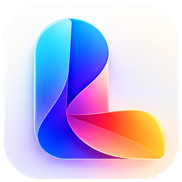

循環與節奏
可以循環單句、多選字幕或 A–B 時間區間，設定單課重複次數和句間停頓。播放清單支援單曲循環、清單循環和隨機播放。

LingoGather放慢速度聽清一句，拆開看它怎麼說，再把想用的說法留下。
可以循環單句、多選字幕或 A–B 時間區間，設定單課重複次數和句間停頓。播放清單支援單曲循環、清單循環和隨機播放。
在預設檢視、隱藏字幕、隱藏畫面和迷你控制之間切換。
把長句切成意群，邊聽邊看醒目標示。可直接在字幕裡選字查詢。
用裝置端語音模型產生字幕，macOS 26 也可使用 Apple 語音辨識。用 Apple 翻譯或自選服務翻譯字幕，也可線上搜尋字幕、匯出字幕文字。
可調整字幕字級、開關雙語顯示、調換原文與譯文順序、顯示或隱藏時間碼。可標記重點、套用粗體、斜體、底線或刪除線，也可寫備註。
播放本機影片或音訊、載入外掛音軌，並照原樣式顯示 ASS/SSA 字幕。MKV、WebM 等格式可在 Mac 上轉換後播放。
錄下自己的聲音，與原音比對，找出下一遍值得練的地方。
按字幕逐句錄音，與原音比對回放。可切換波形樣式，點一下原音或錄音波形上的任一位置即可從該處播放。
將游標移到格子上即可預覽字幕。開啟相應設定後，按兩下格子可在播放器播放該句，長按可加入醒目標記。
跟讀格子的標記可與播放器字幕清單同步。標記過的句子也會匯入對應影片筆記的「重點句」。
可將選取的句子或全部字幕合併，一口氣錄製跟讀。AI 文字回饋支援全文朗讀，也可以點一句，從該句開始聽。
連接語音服務後，可查看準確度、流暢度等發音分數和等級。設定 AI 服務後，可查看單句回饋或全文總評。
把說法、上下文和影片時間碼放進自己的 Markdown 筆記。
筆記以一般 .md 檔儲存在自選檔案夾，其他 Markdown 編輯器也能開啟。
支援標題、待辦清單、表格、公式、圖表和提示區塊。在筆記裡嵌入圖片、音訊、影片和書籤。
可連到筆記或指定區塊、查看反向連結、用同步區塊重複使用內容，也能依檔案夾、標籤或大綱整理與搜尋。
在影片筆記裡集中標記過的字幕，點一下儲存的時間碼即可回到播放器裡的對應位置。
邊讀邊註記、翻譯，遇到值得記住的段落，當下做成閃卡。
用頁面縮圖、大綱和書籤定位，在文件中搜尋，也能從註記側欄跳回標記過的位置。
可以標記或加底線、加入備註，也能用圖形或手繪在頁面上加上標示。
用 OCR 辨識掃描頁面的文字。可翻譯選取的文字，也能在對照模式下並排查看原文與譯文。
閱讀時可用選取的文字或頁面區域建立閃卡。
在同一個工作區閱讀網頁，遇到難句就選取翻譯或翻譯整頁。
在工作區分頁開啟網站、將分頁分組。書籤可按檔案夾管理，也能將整個檔案夾開啟為分頁群組。
用閱讀模式專心查看文章正文，也可在瀏覽時開啟廣告封鎖。
翻譯網頁時可保留原文對照，也可只翻譯選取的一段文字。
把學過的內容做成卡片，在快忘記時再練一遍。
用筆記或摘錄的句子製卡，支援正反面卡、填空卡、表格卡和圖片遮擋。
FSRS-7 依練習評級安排複習。可複習到期卡片，並查看每張卡的練習記錄。
按筆記或標籤瀏覽卡片、設定每日目標，並在桌面小工具查看練習情況與連續練習天數。
支援匯入和匯出 Anki 套件與相容的文字格式。
針對手上的材料提問、檢查文法，也可以開口練一段。
連接自己的 AI 服務後，即可針對筆記和 PDF 提問。
可檢查文法、聽寫、用 AI 語音對話練口說，也能朗讀文字。雲端功能使用你自行設定的服務。
播放本機影音、錄音跟讀、閱讀 PDF、編輯筆記和複習閃卡都可以離線完成。下載語音模型和 Apple 翻譯所需的語言後，還能離線產生和翻譯字幕。
筆記是存放在自選檔案夾裡的 Markdown 檔案。雲端翻譯和 AI 服務可按需要啟用，使用你自己的 API 金鑰。
閱讀隱私權政策選一段熟悉的影片或音訊。入門指南會帶你開啟素材、加入字幕，並存下第一個想記住的說法。